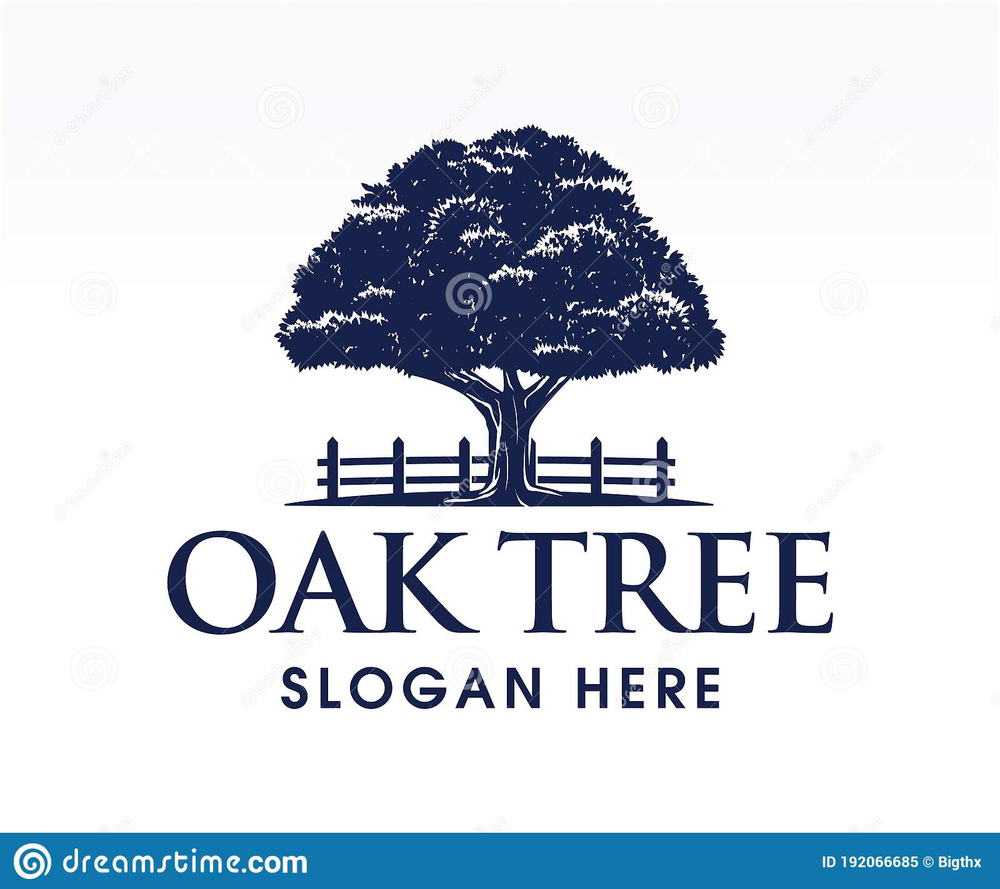

Oak Restaurant: Fine Dining Experiences
OAK voert een eigentijdse keuken waarbij inspiraties van over de hele wereld tot uiting worden gebracht in het menu. Hierbij wordt gebruik gemaakt van met name seizoens- en dagverse producten. De gerechten bestaan uit enkele ingrediënten, waarbij bepaalde verwerkingen ervoor zorgen dat elk gerecht hoog op smaak is.